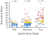
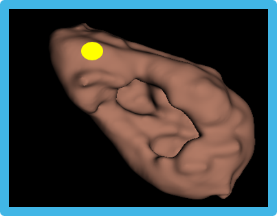

Traditional and Deep Learning
A Layman’s Guide
Scott Doyle / scottdoy@bufalo.edu
Machine Learning
A Brief Introduction
Machine Learning Definitions
Machine Learning (ML) uses collected data to do something useful.
- Find underlying patterns (knowledge discovery)
- Simplify a complex phenomenon (model building)
- Place data into categories (classification)
- Predict future data (regression)
Machine Learning Definitions
The job of the ML expert is to:
- Understand and identify the goal
- Collect data
- Select an appropriate model or algorithm
- Evaluate the system in terms of costs
Types of Machine Learning
Supervised Learning
Use labeled datasets to classify new, unseen data
Unsupervised Learning
Use unlabeled data to identify natural groups
Semi-Supervised Learning
Use partially labeled data to handle the process
Reinforcement Learning
An agent learns to complete a task policy of rewards
Data Definitions
The starting point for all ML algorithms is data.
So… what do we mean by “data”?
Data Comes in Many Forms

Computational Pathology:
Expression of Disease State
Biological structure is primary data.
We can quantify biological structure.
We can model relationships between structure and disease.
Fundamental Hypothesis
Changes in genomic expression manifest as physical changes in tumor morphology


S. S. Badve et al., JCO (2008), Paik et al., N Engl J Med (2004)
Fundamental Hypothesis
Changes in genomic expression manifest as physical changes in tumor morphology

S. S. Badve et al., JCO (2008), Paik et al., N Engl J Med (2004)
Data Fusion Improves Predictions


Atoms to Anatomy Paradigm




Example Problem
Fine Needle Aspirate Classification
Example: Biomedical Image Analysis


Fine Needle Aspirates
Problem Statement: Predict whether a patient’s tumor is benign or malignant, given an FNA image
Building Informative Features
Domain knowledge identifies useful features.
Pathologists already distinguish benign from malignant tumors.
Our job is to convert qualitative features to quantitative ones.
Building Informative Features
The pathologist lists cell nuclei features of importance:
- Radius
- Texture
- Perimeter
- Area
- Smoothness
- Compactness
- Concavity
- Concave Points
- Symmetry
- Fractal Dimension
Feature extraction results in 30 feature values per image.
Selecting Features for the FNA
To begin, we collect training samples to build a model.
- Collect a lot of example images for each class
- Get our expert to label each image as “Malignant” or “Benign”
- Measure the features of interest (image analysis or by hand)
- Build a histogram of the measured feature
Texture of the Nuclei
Average Radius of the Nuclei
Characteristics of Good Features
Descriptive: Similar within a class, and different between classes
Relevant: Features should make sense
Invariant: Not dependent on how you measure them
Calculating Probabilities from Features
Combinations of Features
Combining features often yields greater class separation.
Multivariate Distribution
Multivariate Distribution
Variance vs. Generalization
Linear boundaries do not model variance and miss obvious trends.
Complex boundaries fit training perfectly, but do not generalize.
In general, you want the simplest model with the best performance.
Tradeoff: Variance vs. Generalization
Each of these decision boundaries makes errors!
There is always a tradeoff; we need to consider the cost.
Cost is defined by our goals and acceptable performance.
Costs
Should we prioritize some kinds of errors over others?
Not all mistakes carry the same cost. For example:
- A patient is told they have a tumor when they do not (false positive)
- A patient is told they are cancer-free when they are not (false negative)
Neural Networks
Building Blocks for Deep Learning
Biological Inspiration for Neural Networks

Anatomy of a[n Artificial] Neuron
Simple Perceptron Decision Space

Richard O. Duda, Peter E. Hart, David G. Stork, “Pattern Classification, 2nd Edition”

Simple Problem: XOR Classification

Neural Network Solution to XOR

Details of Neural Network Weights
Training Neural Networks: Finding the Weights

Step 3: Calculate error of the result
Step 4: Calculate gradients and modify weights and biases
Step 2: Calculate network output
Step 1: Pick a training example
Why Is It Called A “Black Box”?
Deep Learning
How Does It Work?
“Strong” AI


“Weak” AI


Deep Classifiers
Hand Crafted Features: Selecting features relevant to the image classes
Deep Learning: Use the input samples themselves to identify classes
Innovations that make deep learning possible:
- Large amounts of well-annotated data
- Commodity-level, highly parallel hardware
- Innovations in training algorithms
Simple Example: MNIST Handwriting Dataset

Images in Neural Networks

Images in Neural Networks


Comparing Zeros to Ones


Images in Neural Networks


Images in Neural Networks


Do You Know What These Are?


Do You Know What These Are?


How Do You Know?
Let’s do some quick calculations…
- Number of pixels: 64 × 64 = 4, 096
- Color values: 4, 096 × 3 = 12, 288
With just over 12,000 values, our brains can identify the type of object in this image.
That seems like a lot, but that’s just 12kb worth of input data!
But we aren’t done yet…
Modifications to NNs Needed
- Input Size: 12,288
- Hidden Units (double): 24,000
- Input-to-Hidden Weights: 294 Million
- Output Classes: 3
- Hidden-to-Output Weights: 882 Million
Total Weights: 1.17 Billion
Our brains do a ton of computing!
We need a new approach…
Exploiting Spatial Relationships
Images have some nice properties:
Spatially Localized: Allows us to restrict the number of weights from input to output
Scale-dependent: Reducing image scale allows us to find connections between shapes and objects
Convolutional Neural Network Architecture

Filter Responses

Filter Responses

Patch-Based Classification: Segmentation

Filter Responses


Results of Classification


Need for Annotations
The Importance of Data
Large, Annotated Datasets
ML benefits from large, well-annotated datasets
Natural images are abundant, easy-to-label data
However, it’s not so easy for pathology…
Natural vs. Specialized Image Datasets

Human Faces Are Well-Annotated

Dog Faces Are Still Common

Medical Images are Sparse
!https://cloud.google.com/vision(img/he_imagesearch01.png)
There Is Some Data However

Disparity in Dataset Sizes

Challenges in Building Pathology Datasets
Data Generation: Limited scope, proprietary software, lack of standards
Data Hosting / Access: Large, high throughput storage options needed
Annotations: Difficult, time-consuming, application dependent
Difficulty in Annotating Samples


Addressing Annotation with Formal Training